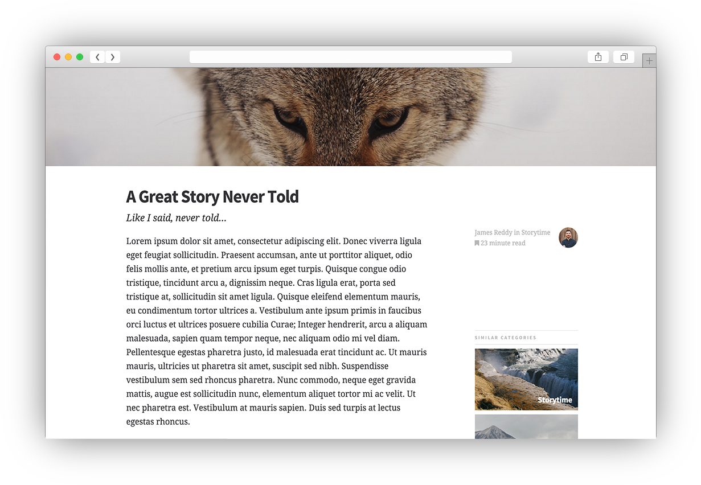

“Writer” Documentation by “Adventure Themes”
“Writer Theme”
Created: February 12th, 2015
Updated: August 13th, 2017
By: Adventure Themes
Thank you for purchasing Writer theme. If you have any questions that are beyond the scope of this help file, please feel free to contact us. Thanks so much!
Table of Contents
A) Introduction - top
Writer Theme is a `responsive` template focussed on typography, minimal design and quality photography.
Writer will look great in any situation but was crafted especially for writers, photography, travel & food bloggers. The Writer theme helps you writing look fantastic. The example site is a multi user story telling blog style.
B) Page Templates - top
Writer Theme is based around a total of 9 different html pages that together create the necessary pages for any blog or website.
- Home Template(index.html)
- Home Alternate Template(alt-home.html)
- Post Template(post.html)
- Post - Sidebar Template(post-sidebar.html)
- Post - Footer Template(post.html)
- Category Template(category.html)
- Page Template(page.html)
- Author Template(author.html)
- Favorites Template(favorites.html)
- Contact Template(contact.html)
Changing a hero image
The most common question is how to change a hero images/sidebar image. These images use a CSS background image and can be changed inline in the HTML.
Home Page
The Homepage sets the stage for the entire website. A hero image sidebar that repositons to a header on smaller screen sizes. Latest blog posts or articles ar eon the right hanf side there is also an alternate view which showcases categories.
Within the sidebar there is space for branding and a CTA.
Each page utilizes an off screen navigation activated via the burger menu on the top left hand side.
Home Alternate Page
A new adition with Version 2, the alternate homepage may work for users who want less of a focus on imagery. Have the articles and categories on show both at the same time.

Post Page
The bread and butter of any blog based website. The post page is intentionally minimal. Focus is on a larger header image. Body copy is set in `Droid Serif` while title copy is set in `Source Sans Pro` giving a great reader experience. The usual html elements are styled for writerts, blockquotes, pull quotes, lists etc. There is space for informationa about the author, category and length of post right above the title.

Post Sidebar Page
A slight varaition on the standard post page that includes a sidebar.
Post footer example
A quick Look at the footer section of the post page. You can decide wether to include the related stories section or just the footer.
Category Template
The Category page is the typical archive example. Each category you use in your posts should link to the page and then only show the relevant posts.
Page/Post Template
A stripped back full width template with an alternate footer to the post page.
Author Page Template
Any fully fledged blog template requires an author page. Each post has meta data that can link to this author page. There is space for an avatar image and short bio description. Below the description is an area for popular or most recent posts by the author.
Favorites Page Template
The favorites template is another variation on the homepage which combines a grid view of posts with a list fo categories.
Contact Page Template
A built in form ready to use as your point of contact. The form can be extended with any aditional fields and follows bootstrap conventions.
C) CSS - top
Writer uses the bootstrap framework for a bulletproof responsive grid system that ensures the sites looks great across devices. Bootstrap is the most popular front-end framework, visit http://getbootstrap.com for a list of the great features it provides.
All animations are controlled by CSS and not Javascript to ensure fast and smooth animations.
Sass - top
Writer was built using the Sass pre-processing language. If you have never used sass before visit http://sass-lang.com to learn about the great features that sass allows. If you are wishing to further develop the design of Writer you will want o edit the sass files and recompile the css into the minified file.
F) JS - top
Writer makes uses of minimal amounts of Javascript to keep the site running lightning fast. jQuery is included and is a depedecy of jPanel menu.
NO Javascript Support - top
As the menu is powered by Javascript there is also a menu within "noscript" tags to ensure that even with Javascript disabled on the users browser they can still navigate the site.
jPanel Menu - top
Jpanelmenu is used to power the offsite navigation. The sliding drawer allows for optimal readability while still having access to the entire site within one click.
Retina.js - top
Retina.js powers the high resolution support. Just include an image at twice the resolution of your normal images and use the suffix @2x for example logo.png and logo@2x.png.
G) Sources and Credits - top
- Unslash - Stock Photography
- Death to the Stock Photo - Stock Photography
- Retina.js - Retina Image Support
- Bootstrap - CSS Framework
- jPanelMeny - Slide out navigation
- Animate.css - CSS Animations
- bourbon.io - Sass Mixins
- uifaces - User Icon examples
Adventure Themes